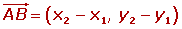
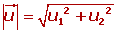
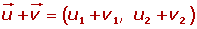
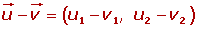
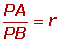
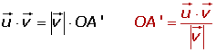

Resumen de vectores y producto escalar
Resumen de vectores y producto escalar
- Vectores
- Clasificación
- Coordenadas de un Vector
- Módulo de un vector y vector unitario
- Operaciones de vectores
- Combinación lineal de vectores
- Sistema de referencia
- Coordenadas del punto medio de un segmento
- Producto escalar
Vectores y elementos
Un vector fijo  es un segmento orientado que va del punto A (origen) al punto B (extremo).
es un segmento orientado que va del punto A (origen) al punto B (extremo).
Un vector fijo es nulo cuando el origen y su extremo coinciden.
El módulo del vector  es la longitud del segmento AB, se representa por
es la longitud del segmento AB, se representa por  .
.
Dirección de un vector: La direcccíon del vector es la dirección de la recta que contiene al vector o de cualquier recta paralela a ella.
Sentido de un vector: El sentido del vector  es el que va desde el origen A al extremo B.
es el que va desde el origen A al extremo B.
Clasificación de los vectores
1 Vectores equipolentes:

Dos vectores son equipolentes cuando tienen igual módulo, dirección y sentido.
2 Vectores libres:
El conjunto de todos los vectores equipolentes entre sí se llama vector libre. Cada vector fijo es un representante del vector libre.
Coordenadas de un Vector
1 Vector de posición de un punto en el plano de coordenadas
El vector  que une el origen de coordenadas O con un punto P se llama vector de posición del punto P.
que une el origen de coordenadas O con un punto P se llama vector de posición del punto P.
2 Coordenadas o componentes de un vector en el plano
Si las coordenadas de A y B son:


Las coordenadas o componentes del vector  son las coordenadas del extremo menos las coordenadas del origen.
son las coordenadas del extremo menos las coordenadas del origen.

Módulo de un vector
El módulo de un vector es la longitud del segmento orientado que lo define.
El módulo de un vector es un número siempre positivo y solamente el vector nulo tiene módulo cero.
1 Cálculo del módulo conociendo sus componentes


2 Cálculo del módulo conociendo las coordenadas de los puntos
Distancia entre dos puntos
La distancia entre dos puntos es igual al módulo del vector que tiene de extremos dichos puntos.
Distancia entre dos puntos

Los vectores unitarios tienen de módulo la unidad.
Operaciones de vectores
1 Suma de vectores
Para sumar dos vectores libres  y
y  se escogen como representantes dos vectores tales que el extremo de uno coincida con el origen del otro vector.
se escogen como representantes dos vectores tales que el extremo de uno coincida con el origen del otro vector.
Regla del paralelogramo
Se toman como representantes dos vectores con el origen en común, se trazan rectas paralelas a los vectores obteniéndose un paralelogramo cuya diagonal coincide con la suma de los vectores.
Para sumar dos vectores se suman sus respectivas componentes.


2 Resta de vectores
Para restar dos vectores libres  y
y  se suma
se suma  con el opuesto de
con el opuesto de  .
.
Las componentes del vector resta se obtienen restando las componentes de los vectores.


3 Producto de un número por un vector
El producto de un número k por un vector  es otro vector:
es otro vector:
1 De igual dirección que el vector  .
.
2 Del mismo sentido que el vector  si k es positivo.
si k es positivo.
3 De sentido contrario del vector  si k es negativo.
si k es negativo.
4 De módulo
Las componentes del vector resultante se obtienen multiplicando por K las componentes del vector.

Combinación lineal de vectores
Dados dos vectores:  y
y  , y dos números: a y b, el vector se dice que es una combinación lineal de
, y dos números: a y b, el vector se dice que es una combinación lineal de  y
y  .
.
Cualquier vector se puede poner como combinación lineal de otros dos que tengan distinta dirección.

Esta combinación lineal es única.
Base

Cualquier vector se puede poner como combinación lineal de otros dos que tengan distinta dirección.

Esta combinación lineal es única.
Sistema de referencia
En el plano, un sistema de referencia está constituido por un punto O del plano y una base ( ,
,  ).
).
El punto O del sistema de referencia se llama origen.
Los vectores  ,
,  no paralelos forman la base.
no paralelos forman la base.
1 Ortogonal
Los vectores base son perpendiculares, pero de distinto módulo.
2 Ortonormal
Los vectores de la base son perpendiculares y unitarios, es decir, de módulo 1.
Se representan por las letras .

Las rectas OX, OY se llaman ejes de coordenadas o ejes coordenados cartesianos.
Coordenadas del punto medio de un segmento

Las coordenadas del punto medio de un segmento son la semisuma de las coordenadas de los extremos.

Condición para qué tres puntos estén alineados

Los puntos A (x1, y1), B(x2, y2) y C(x3, y3) están alineados siempre que los vectores  tengan la misma dirección. Esto ocurre cuando sus coordenadas son proporcionales.
tengan la misma dirección. Esto ocurre cuando sus coordenadas son proporcionales.

Simétrico de un punto respecto de otro
Si A' es el simétrico de A respecto de M, entonces M es el punto medio del segmento AA'. Por lo que se verificará igualdad:

Coordenadas del baricentro
Baricentro o centro de gravedad de un triángulo es el punto de intersección de sus medianas.
Las coordenadas del baricentro son:

División de un segmento en una relación dada
Dividir un segmento AB en una relación dada r es determinar un punto P de la recta que contiene al segmento AB, de modo que las dos partes, PA y PB, están en la relación r:

Producto escalar
El producto escalar de dos vectores es un número real que resulta al multiplicar el producto de sus módulos por el coseno del ángulo que forman.

1 Expresión analítica del producto escalar
2 Expresión analítica del módulo de un vector

3 Expresión analítica del ángulo de dos vectores

4 Condición analítica de la ortogonalidad de dos vectores

Proyección
El producto de dos vectores no nulos es igual al módulo de uno de ellos por la proyección del otro sobre él.



Propiedades del producto escalar
1 Conmutativa
2 Asociativa

3 Distributiva
4 El producto escalar de un vector no nulo por sí mismo siempre es positivo.